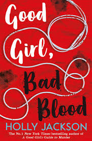

- If this book were a song, it would be Run Boy Run
- If this book were a food it would be potoatos
- If this book were an animal a robot dog ( the creepy ones that dont look like dogs, they remind me of grieviers.).
- If this book were an object it would be a big red button.
- I promised him!" he screamed, realizing even as he did so that his voice was laced with something wrong. Almost insanity. "I promised I'd save him, take him home! I promised him!
- If you're going to decipher a hidden code from a complex set of different mazes, I'm pretty sure you need a girl's brain running the show.
- If this book were a song, it would be Greater Than the Whole Sky by Taylor Swift
- If this book were a food, black coffee
- If this book were an object, it would be paint on a shed.
- It was in nightmares, and crashing pans, and heavy breaths, and dropped pencils, and thunderstorms, and closing doors, and too loud, and too quiet, and alone and not, and the ruffle of pages, and the tapping of keys and every click and every creak. The gun was always there. It lived inside her now.”
- “Stanley died with his ankles in her hands, scared and bleeding out while a fire raged around them. She did not think he would want to be cremated, burned, like his father had done to those six kids.”
- If this book were a song, it would be Cassandra by Taylor Swift
- If this book were a food, a cereal bar
- If this book were an animal, a bird
- If this book were a place, it would be McDonalds
- Andie flashed into her mind, her ghost sitting beside her, holding Pips hand. Poor Andie. She had known what her father was. Had to come back every day to a house where a monster lived. Died trying to get away from him, to protect her sister from him.
- Hey Sarge. Remember me?

Published: 2020
Genre: Young Adult, Mystery, Thriller
Rating: 4/5
Summary
In this book, Pip says shes done with crime until her friend Conner's brother Jamie goes missing. (DUN DUN DUNNN). So, because Pip can't help herself, she gets involved in the case(even though last time she did that, her dog died). Turns out Jamie was talking to a girl called Layla Mead. I thought Layle mead ended up being Jamie( jokes on me, it was actually Charlie and his wife, Flora. Stanley Forbes goes to see Layla ( who Pip is pretending to be ). We find Jamie (I'm pretty sure he then leaves). We then find out that Stanley Forbes is actually Child Brunwick; his dad was a serial killer, and he basically made Stanley help. Sound familiar?( Im looking at you, Dean Redding. ). In the end, Pip's neighbor, Charlie Green, ends up killing Stanley. Leaving Pip with tons of trauma.
Good Girl Bad Blood by Holly Jackson

As Good As Dead by Holly Jackson
The final book is the darkest ( in my opinion). Basically, Pip gets a stalker, and we learn that the stalker is the dt killer/duct tape killer. Which we later learn is Jason Bell. Pip gets kidnapped by Jason Bell. Then, in an act of not wanting to die, Pip then kills Jason Bell. ( To say I was shocked was an understatement) Then, proceed to blame it on Max Hastings
This book was a lot. I will say it was fast-paced, so I definitely enjoyed it a lot because of that. Plot-wise wise it was still insane, umm. I feel like we should change the title of the first book and switch it to the last one. I genuinely wonder if Holly Jackson is on an FBI watch list(Im just kidding, do not worry). I did cry again at this book when Pip and Ravi broke up, after everything that happened between them. But in the end, it actually was a good book PSA: PLEASE DO NOT FRAME PEOPLE FOR MURDER OR MURDER PEOPLE. Fun time